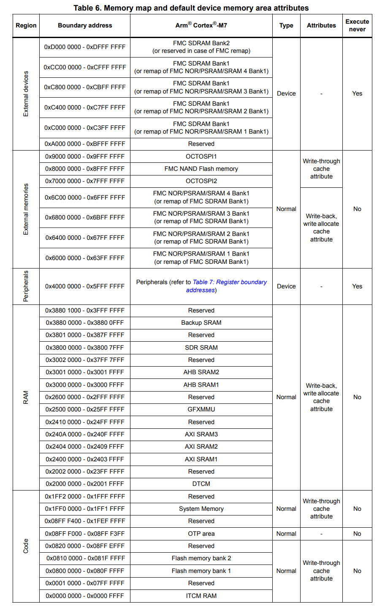

參考資訊： https://www.st.com/resource/en/datasheet/stm32h7b0vb.pdf https://www.st.com/resource/en/reference_manual/dm00463927-stm32h7a37b3-and-stm32h7b0-value-line-advanced-armbased-32bit-mcus-stmicroelectronics.pdf
